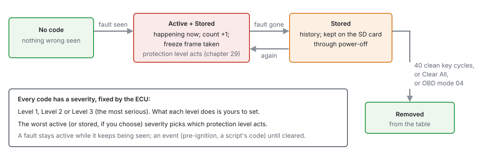

Diagnostics and trouble codes¶
Basic → Intermediate
In one sentence: every fault the ECU notices becomes a trouble code with a severity, kept in one table that the studio, a scan tool, the board's LEDs and the protection levels all read — and the code tells you where to look.
Overview¶
Basic
- A trouble code (DTC) is a P-code: P0117 is coolant sensor low, P0335 a crank signal fault. Codes from P0xxx are the standard OBD-II ones; P1xxx are this ECU's own.
- Each code has a severity, Level 1, 2 or 3, fixed by the ECU. What each level does is set on Protection Levels (chapter 29) — off in a new tune.
- The table holds up to 64 codes. It is kept on the SD card, so codes survive power-off.
Where you see them:
| Where | Shows |
|---|---|
| Studio Diagnostic Trouble Codes dock | the whole table, with times, counts and a freeze frame |
| Studio Status Lamps | a lamp per system: coolant, MAP, trigger … |
| Board WAR / ERR LEDs | the worst Level 1–2 / Level 3 code, flashed digit by digit (chapter 7) |
| A generic OBD-II scan tool | the codes (mode 03), and clearing them (mode 04) — chapter 14 |
| Channels | dtc_active, dtc_stored, dtc_worst_code, dtc_worst_sev, dtc_indicators |
The complete list of codes is in the reference section: Trouble codes.
Concepts¶
Intermediate
1 · The life of a code¶

- Active: the fault is happening now. Most faults are conditions — a sensor out of range — and stay active only while the check keeps finding them; they drop about 3 seconds after it stops. Some are events — a pre-ignition strike, a code a Lua script sets — and stay active until healed or cleared.
- Stored: it has happened. A stored code stays after the fault goes, like a check-engine history.
- Count: how many times it has gone active.
- Freeze frame: engine speed, MAP, coolant and battery voltage the last time it went active.
- Ageing: a key cycle in which a stored code never went active is a clean cycle. After 3 clean cycles a code is no longer "confirmed"; after 40 it is removed.
2 · Severity and protection¶
The worst code picks the protection level that acts (chapter 29). DTC Condition on each level chooses whether it counts only Current (active) codes, or Stored ones too — so an overheat can keep the engine in limp mode until someone has looked at it.
3 · Where codes come from¶
The Source column says who raised a code:
| Source | Raises |
|---|---|
| a sensor's name | that sensor's own checks: out of range, stuck, missing (chapter 17) |
| Trigger | sync lost, signal missing, cam faults (chapter 16) |
| Protection | the built-in checks and threshold monitors (chapter 29) |
| Pin arbiter | two functions wanting one pin (chapter 18) |
| Config | a setting the ECU cannot run as set |
| CAN bus | frame and channel conflicts (chapter 33) |
| Lua | your script's own codes (chapter 35) |
| Throttle | electronic throttle faults (chapter 22) |
| Module | a module's own checks: knock, misfire, EGT … |
| Sensor supply | a 5 V sensor reference has failed |
Procedure¶
Basic
Reading codes¶
- Connect the studio. View ▸ Diagnostic Trouble Codes shows the dock (on by default, at the right).
- Each row: Code · Status · Severity · Source · Count · First seen · Last seen. Active codes are red, stored-only grey; Level 3 codes stand out.
- Hover a row for what the code means and, where the ECU recorded one, its freeze frame: "When it last went active: 3120 RPM · 95.0 kPa · 88.5 °C · 13.9 V".
- The summary says how many are active and stored. Refresh reads the table again (it also refreshes by itself every second).
"First seen" and "Last seen" are given as the power-up number and the time since that power-up — "boot 12 · 340.5s" is 340.5 seconds into the twelfth power-up.
Fixing and clearing¶
- Fix the cause. The code's Source and description point at the system; the chapter for that system has a troubleshooting table.
- Watch the code go from Active to Stored.
- Clear All empties the table. A fault that is still there comes straight back as Active.
Clearing also resets what the protection levels see: a level held by a Stored code lets go.
Without the studio¶
- LEDs: count the flashes on WAR and ERR (chapter 7).
- Scan tool: on the OBD-II bus (chapter 14), read (mode 03) and clear (mode 04).
Examples¶
Intermediate
Example 1 — a coolant code on a cold morning
P0117 (coolant sensor low) active, Source Coolant Temperature, freeze frame 0 RPM. The sensor reads below its range at key-on: a broken wire or plug (chapter 17). Mend it; the code goes to Stored; Clear All.
Example 2 — limp mode that stays
The engine is limited to 3000 RPM after an overheat, though the coolant is now normal. Protection level 3 uses DTC Condition: Stored, so the stored P0217 keeps it in limp. Look at the cooling system, then Clear All.
Example 3 — a code that comes and goes
P0335 (crank signal) with a count of 14 and nothing wrong now. Intermittent: the freeze frames show it at high RPM each time. Check the sensor's air gap and wiring (chapter 16).
Pitfalls and troubleshooting¶
Basic → Advanced
| Symptom | Likely causes | Check |
|---|---|---|
| Dock says "not connected" or "No DTC data" | Studio not connected | Connect |
| Codes come back straight after Clear All | The fault is still there | The code's system |
| Codes lost after power-off | No SD card | Chapter 36 |
| A code with no description | A code this studio's definition does not name | The reference list; update the studio |
| Lots of sensor codes on the bench | Sensors not connected | Expected (chapter 43) |
| A code but nothing happens | Its protection level is off | Chapter 29 |
Related¶
- Chapter 7 — The board (WAR and ERR LEDs)
- Chapter 14 — Vehicle integration (OBD-II)
- Chapter 29 — Engine protection (protection levels)
- Chapter 45 — Troubleshooting guide
- Reference — Trouble codes